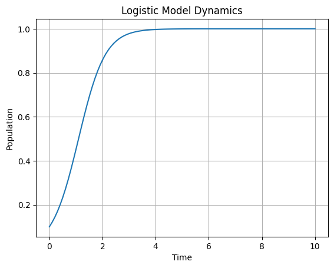

#Page Rank Page Rank adalah algoritma ini dikembangkan oleh Larry Page dan Sergey Brin. Page Rank menilai pentingnya halaman web berdasarkan tautan yang menuju ke halaman tersebut. Jika banyak halaman menautkan ke halaman tertentu, itu dianggap penting. Selain itu, tautan dari situs resmi juga memberikan otoritas tambahan. Dengan demikian, Page Rank secara iteratif menetapkan peringkat pada setiap halaman web berdasarkan peringkat halaman yang menautkan ke halaman tersebut.
Untuk menghitung ( V2 ), kita perlu melakukan perkalian matriks antara matriks ( A ) dan vektor ( V ). Hasil dari perkalian ini kemudian akan dibulatkan.
Mari kita hitung hasilnya:
Hasil yang dibulatkan ke dua angka di belakang koma adalah: $\( \begin{align*} \text{V2}&= \begin{bmatrix} 0.38 \\ 0.08 \\ 0.33 \\ 0.21 \end{bmatrix} \end{align*} \)$
Jadi, hasil akhirnya adalah: $\( \begin{align*} \begin{bmatrix} 0.38 \\ 0.08 \\ 0.33 \\ 0.21 \end{bmatrix} \end{align*} \)$
import numpy as np
# Define matrix A
A = np.array([
[0, 0, 1, 1/2],
[1/3, 0, 0, 0],
[1/3, 1/2, 0, 1/2],
[1/3, 1/2, 0, 0]
])
# Define vector V
V = np.array([0.25, 0.25, 0.25, 0.25])
# Perform the matrix-vector multiplication
V2 = np.dot(A, V)
# Round the result to two decimal places
V2_rounded = np.round(V2, 2)
print("V2:", V2_rounded)
V2: [0.38 0.08 0.33 0.21]
A = np.array([
[0, 0, 1, 1/2],
[1/3, 0, 0, 0],
[1/3, 1/2, 0, 1/2],
[1/3, 1/2, 0, 0]
])
V = np.array([
[0.25],
[0.25],
[0.25],
[0.25]
])
print("V0:")
print(V)
# Iterasi hingga V20
for i in range(1, 21):
V = np.dot(A, V)
print(f"V{i}:")
print(V,"\n")
V0:
[[0.25]
[0.25]
[0.25]
[0.25]]
V1:
[[0.375 ]
[0.08333333]
[0.33333333]
[0.20833333]]
V2:
[[0.4375 ]
[0.125 ]
[0.27083333]
[0.16666667]]
V3:
[[0.35416667]
[0.14583333]
[0.29166667]
[0.20833333]]
V4:
[[0.39583333]
[0.11805556]
[0.29513889]
[0.19097222]]
V5:
[[0.390625 ]
[0.13194444]
[0.28645833]
[0.19097222]]
V6:
[[0.38194444]
[0.13020833]
[0.29166667]
[0.19618056]]
V7:
[[0.38975694]
[0.12731481]
[0.29050926]
[0.19241898]]
V8:
[[0.38671875]
[0.12991898]
[0.28978588]
[0.19357639]]
V9:
[[0.38657407]
[0.12890625]
[0.29065394]
[0.19386574]]
V10:
[[0.38758681]
[0.12885802]
[0.29024402]
[0.19331115]]
V11:
[[0.38689959]
[0.1291956 ]
[0.29028019]
[0.19362461]]
V12:
[[0.3870925 ]
[0.12896653]
[0.29037664]
[0.19356433]]
V13:
[[0.38715881]
[0.12903083]
[0.29029626]
[0.1935141 ]]
V14:
[[0.38705331]
[0.12905294]
[0.2903254 ]
[0.19356835]]
V15:
[[0.38710958]
[0.12901777]
[0.29032841]
[0.19354424]]
V16:
[[0.38710053]
[0.12903653]
[0.29031753]
[0.19354541]]
V17:
[[0.38709024]
[0.12903351]
[0.29032448]
[0.19355177]]
V18:
[[0.38710037]
[0.12903008]
[0.29032272]
[0.19354683]]
V19:
[[0.38709614]
[0.12903346]
[0.29032191]
[0.19354849]]
V20:
[[0.38709616]
[0.12903205]
[0.29032302]
[0.19354877]]
print("V0:")
print(np.round(V, 2),"\n")
# Iterasi hingga V20
for i in range(1, 21):
V = np.dot(A, V)
V_rounded = np.round(V, 2)
print(f"V{i}:")
print(V_rounded,"\n")
V0:
[[0.39]
[0.13]
[0.29]
[0.19]]
V1:
[[0.39]
[0.13]
[0.29]
[0.19]]
V2:
[[0.39]
[0.13]
[0.29]
[0.19]]
V3:
[[0.39]
[0.13]
[0.29]
[0.19]]
V4:
[[0.39]
[0.13]
[0.29]
[0.19]]
V5:
[[0.39]
[0.13]
[0.29]
[0.19]]
V6:
[[0.39]
[0.13]
[0.29]
[0.19]]
V7:
[[0.39]
[0.13]
[0.29]
[0.19]]
V8:
[[0.39]
[0.13]
[0.29]
[0.19]]
V9:
[[0.39]
[0.13]
[0.29]
[0.19]]
V10:
[[0.39]
[0.13]
[0.29]
[0.19]]
V11:
[[0.39]
[0.13]
[0.29]
[0.19]]
V12:
[[0.39]
[0.13]
[0.29]
[0.19]]
V13:
[[0.39]
[0.13]
[0.29]
[0.19]]
V14:
[[0.39]
[0.13]
[0.29]
[0.19]]
V15:
[[0.39]
[0.13]
[0.29]
[0.19]]
V16:
[[0.39]
[0.13]
[0.29]
[0.19]]
V17:
[[0.39]
[0.13]
[0.29]
[0.19]]
V18:
[[0.39]
[0.13]
[0.29]
[0.19]]
V19:
[[0.39]
[0.13]
[0.29]
[0.19]]
V20:
[[0.39]
[0.13]
[0.29]
[0.19]]
import numpy as np
import matplotlib.pyplot as plt
from scipy.integrate import odeint
# Definisikan fungsi model logistik
def logistic_model(x, t, r):
return r * x * (1 - x)
# Parameter
r = 2.0 # Anda bisa mengganti nilai ini
x0 = 0.1 # Kondisi awal
t = np.linspace(0, 10, 100) # Interval waktu
# Integrasikan persamaan diferensial
solution = odeint(logistic_model, x0, t, args=(r,))
# Plot hasilnya
plt.plot(t, solution)
plt.xlabel('Time')
plt.ylabel('Population')
plt.title('Logistic Model Dynamics')
plt.grid(True)
plt.show()
